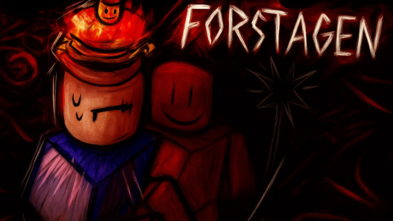

Добро пожаловать!
Это сайт студии Lolgame52. Здесь вы найдете информацию о наших проектах и играх.
Присоединяйтесь к нашему Телеграм-каналуForstagen

Ссыка на игру:
Описание игры:
----------------------
⚠️ ИГРА В АЛЬФА-ВЕРСИИ! ⚠️
Будьте готовы к багам и постоянным изменениям!
Добро пожаловать в Forstagen — место, где реальность переплетается с тайной. 🌫️
Здесь каждый шаг может стать последним...
👥 Встречайте знакомых и незнакомцев — друзья, враги или нечто большее? Никто не останется в стороне.
🔹 Выжившие:
- Объединяйтесь, защищайте друг друга и боритесь за жизнь, пока время не истечёт.
- Безжалостно преследуйте свою добычу, ведь только один сможет остаться.
Готов ли ты раскрыть тайны и выжить? ⏳👁️🗨️
Управление:
- Охотник
[ЛКМ] — Удар
[Q] — Бросок
[E] — Огненное сальто
[R] — Подсветка игроков - Атакующий
[Q] — Выстрел
[E] — Удар орудием
[R] — Блок - Выжившие
[Q] — Скорость
[E] — Невидимость
[R] — Камень - Основное
[КОНТРЛ] — ShiftLock
[Shift] — Бег
Лор игры:
Ваши знакомые и популярные персонажи попадают в альтернативную вселенную своего мира, где их преследует странный cOOlKid, но они не сдаются и пытаются найти выход из этого мира. Они уже начинают видеть галлюцинации, из-за этого по тихоньку сходят с ума.